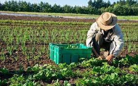
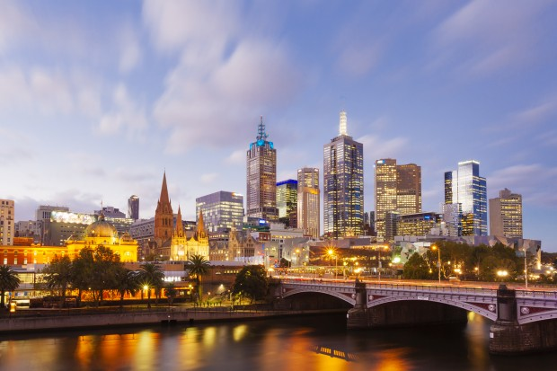
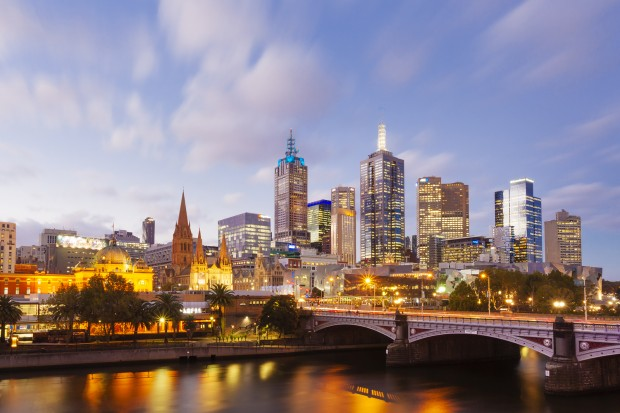

]
Do campo a cidade colhendo oportunidades
Apesar de serem comumente tratados como sinônimos, os conceitos de rural e campo, urbano e cidade, possuem diferenças em suas conceituações. Enquanto cidade e campo são formas concretas, materialização de um modo de vida, urbano e rural são representações sociais. Historicamente a relação entre cidade e campo é vista por meio da divisão do trabalho em: intelectual e manual, de modo que na cidade é beneficiado o produto oriundo do campo. Como cidade no Brasil entendem-se os perímetros urbanos das sedes municipais, territórios e populações considerados urbanizados. A cidade é o centro da organização social e econômica, portanto, nela estão concentrados os principais serviços e produtos que são consumidos tanto pela população da própria cidade, quanto pela população do campo, a qual não consegue produzir tudo aquilo de que necessita.
Desta forma, A cidade pressupõe sedentarismo e uma hierarquia sócio-espacial. Conforme Paul Singer (1993), “a cidade é o modo de organização (sócio)espacial que permite à classe dominante maximizar a extração regular de um mais-produto do campo e transformá-lo em garantia alimentar para sua sustentação e de um exército que garanta a regularidade dessa dominação e extração” (MONTE-MÓR, 2006, p. 07). A cidade não apenas controla e comercializa a produção do campo, mas também passa a transformá-la e agregar valor à esta, expandindo sua esfera de dominação. O campo, que até então era praticamente autossuficiente, se vê dependente da cidade, em alguns casos, até para compra de produtos básicos de vida, como alimentos. Assim, tem-se a subordinação do campo em relação à cidade.
Questão Social no Brasil

Durante as décadas, a crescente industrialização, fez com que muitas pessoas deixassem o campo e migrassem para as cidades. Este fenômeno é conhecido como EXÔDO RURAL, e produz profundas consequências na organização urbana. No Brasil, este teve maior relevância entre os anos de 1960-1980, quando muitas pessoas deixaram o campo, deslocando-se para às cidades em busca de empregos nas fábricas. Com o avanço no meio técnico, a mão-de-obra no campo foi substituída pelos maquinários, expulsando as pessoas da terra, causando um inchaço urbano.
Na cidade, o produto do campo é transformado nas fábricas e, posteriormente revendido aos consumidores. “A indústria impõe à cidade sua lógica centrada na produção e o espaço da cidade organizado como lócus privilegiado do excedente econômico, do poder político e da festa cultural, legitimado como obra e regido pelo valor de uso coletivo, passa a ser privatizado e subordinado ao valor de troca” (MONTE-MÓR, 2006, p. 09). Assim, os produtos deixam de possuir seu valor original, de uso, e passam a ser valorizados pelo custo de troca. Neste processo, o “homem do campo” se torna mais uma vez subordinado à fábrica, pois vê sua produção ser transformada e acrescida de valor.
Novas urbanidades e novas ruralidades
 A cidade moderna movimenta a vida dos homens como se fossem máquinas, e todas as ações são regidas pelo “tempo rápido”. Mas o campo, cada vez mais modernizado, também já aderiu às práticas ritmadas da globalização. “Antes, eram apenas as grandes cidades que se apresentavam como o império da técnica, objeto de modificações, supressões, acréscimos, cada vez mais sofisticados e mais carregados de artifício. Esse mundo artificial inclui, hoje, o mundo rural” (SANTOS, 2005, p. 160). Meio técnico-científico-informacional atinge também o campo.
O urbano e a cidade
O campo e a cidade são formas concretas, ou seja, a materialização de um modo de vida. Já o rural e o urbano são representações sociais. “Campo e cidade são formas espaciais. Urbano e rural possuem, (...) uma dimensão processual, são conteúdo e contingente” (HESPANHOL, 2013, p. 104). O urbano se torna, cada vez mais, em um espaço artificial. O espaço “vai tornando-se um espaço cada vez mais instrumentalizado, culturizado, tecnificado e cada vez mais trabalhado segundo os ditames da ciência”.

A configuração do espaço brasileiro passou por profundas transformações a partir da segunda metade do século XX, o que culminou tanto em pontos positivos, quanto em profundos problemas. Dentre os pontos positivos desse processo estão “a queda da mortalidade infantil (que passou da taxa de 150 mortes para cada mil nascidos vivos em 1940 para 29,6 em 2000), o aumento da expectativa de vida (40,7 anos de vida média em 1940 para 70,5 em 2000), a queda da taxa de fertilidade (6,16 filhos por mulher em idade fértil em 1940 para 2,38 em 2000) e o nível de escolaridade (55,9% de analfabetos em 1940 para 13,6% em 2000). Foi notável também a ampliação do saneamento e a ampliação da coleta de lixo domiciliar mas apesar da melhora referida, alguns desses indicadores ainda deixam muito a desejar” (MARICATO, 2005, p. 01).
Há também diversos desafios impostos ao urbano, como a dependência das pessoas em relação a cidade. As pessoas que antes obtinham seu sustento com base nas atividades do campo, agora são forçadas a se submeterem às atividades industriais. Antes consumiam o produto do seu trabalho, agora o dinheiro intermedia a compra dos produtos necessários. Além disso, a questão fundiária é um grande problema do urbano, já que existe uma inadequada distribuição das populações no território brasileiro, havendo uma maior proporção de pessoas por quilometro quadrado na região Sudeste do país. Um dos mais complexos desafios diz respeito à mobilidade urbana, uma vez que o uso de automóveis particulares foi disseminada (sociedade de consumo), em detrimento ao uso de transporte público.
Ainda, a especulação imobiliária tornou-se um entrave ao dinamismo do urbano, já que o inchaço das cidades ocasiona a especulação imobiliária, quando as áreas mais centrais são valorizadas em detrimento das periféricas. Assim, as populações de baixo renda são comumente expulsas para as regiões mais marginais. Um outro problema bastante conhecido é o fenômeno que ficou conhecido como favelização, quando há a valorização de algumas áreas, as pessoas “expulsas” de suas casas são “forçadas” aos espaços inadequados e até ilegais para moradia. As questões ambientais são problemas que afetam igualmente o urbano, com problemas como as ocupações indevidas (encostas de morros, áreas de preservação, etc.), a dificuldade de escoamento das águas (compactação dos solos, asfaltamento), a poluição (sonora, visual, lixo, etc.), a falta de acesso ao saneamento básico e ainda as enchentes, enxurradas, ilhas de calor, etc. Em relação aos problemas do urbano, Ermínia Maricato defende que o primeiro passo para a mudança é a construção de projetos de longo prazo que incluam mudanças nos transportes e o revisão do uso e ocupação do solo. A revisão sobre uso e ocupação do solo se baseia em controlar a especulação e incluir as populações que são marginalizadas.
A cidade moderna movimenta a vida dos homens como se fossem máquinas, e todas as ações são regidas pelo “tempo rápido”. Mas o campo, cada vez mais modernizado, também já aderiu às práticas ritmadas da globalização. “Antes, eram apenas as grandes cidades que se apresentavam como o império da técnica, objeto de modificações, supressões, acréscimos, cada vez mais sofisticados e mais carregados de artifício. Esse mundo artificial inclui, hoje, o mundo rural” (SANTOS, 2005, p. 160). Meio técnico-científico-informacional atinge também o campo.
O urbano e a cidade
O campo e a cidade são formas concretas, ou seja, a materialização de um modo de vida. Já o rural e o urbano são representações sociais. “Campo e cidade são formas espaciais. Urbano e rural possuem, (...) uma dimensão processual, são conteúdo e contingente” (HESPANHOL, 2013, p. 104). O urbano se torna, cada vez mais, em um espaço artificial. O espaço “vai tornando-se um espaço cada vez mais instrumentalizado, culturizado, tecnificado e cada vez mais trabalhado segundo os ditames da ciência”.

A configuração do espaço brasileiro passou por profundas transformações a partir da segunda metade do século XX, o que culminou tanto em pontos positivos, quanto em profundos problemas. Dentre os pontos positivos desse processo estão “a queda da mortalidade infantil (que passou da taxa de 150 mortes para cada mil nascidos vivos em 1940 para 29,6 em 2000), o aumento da expectativa de vida (40,7 anos de vida média em 1940 para 70,5 em 2000), a queda da taxa de fertilidade (6,16 filhos por mulher em idade fértil em 1940 para 2,38 em 2000) e o nível de escolaridade (55,9% de analfabetos em 1940 para 13,6% em 2000). Foi notável também a ampliação do saneamento e a ampliação da coleta de lixo domiciliar mas apesar da melhora referida, alguns desses indicadores ainda deixam muito a desejar” (MARICATO, 2005, p. 01).
Há também diversos desafios impostos ao urbano, como a dependência das pessoas em relação a cidade. As pessoas que antes obtinham seu sustento com base nas atividades do campo, agora são forçadas a se submeterem às atividades industriais. Antes consumiam o produto do seu trabalho, agora o dinheiro intermedia a compra dos produtos necessários. Além disso, a questão fundiária é um grande problema do urbano, já que existe uma inadequada distribuição das populações no território brasileiro, havendo uma maior proporção de pessoas por quilometro quadrado na região Sudeste do país. Um dos mais complexos desafios diz respeito à mobilidade urbana, uma vez que o uso de automóveis particulares foi disseminada (sociedade de consumo), em detrimento ao uso de transporte público.
Ainda, a especulação imobiliária tornou-se um entrave ao dinamismo do urbano, já que o inchaço das cidades ocasiona a especulação imobiliária, quando as áreas mais centrais são valorizadas em detrimento das periféricas. Assim, as populações de baixo renda são comumente expulsas para as regiões mais marginais. Um outro problema bastante conhecido é o fenômeno que ficou conhecido como favelização, quando há a valorização de algumas áreas, as pessoas “expulsas” de suas casas são “forçadas” aos espaços inadequados e até ilegais para moradia. As questões ambientais são problemas que afetam igualmente o urbano, com problemas como as ocupações indevidas (encostas de morros, áreas de preservação, etc.), a dificuldade de escoamento das águas (compactação dos solos, asfaltamento), a poluição (sonora, visual, lixo, etc.), a falta de acesso ao saneamento básico e ainda as enchentes, enxurradas, ilhas de calor, etc. Em relação aos problemas do urbano, Ermínia Maricato defende que o primeiro passo para a mudança é a construção de projetos de longo prazo que incluam mudanças nos transportes e o revisão do uso e ocupação do solo. A revisão sobre uso e ocupação do solo se baseia em controlar a especulação e incluir as populações que são marginalizadas.